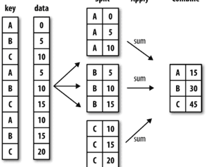
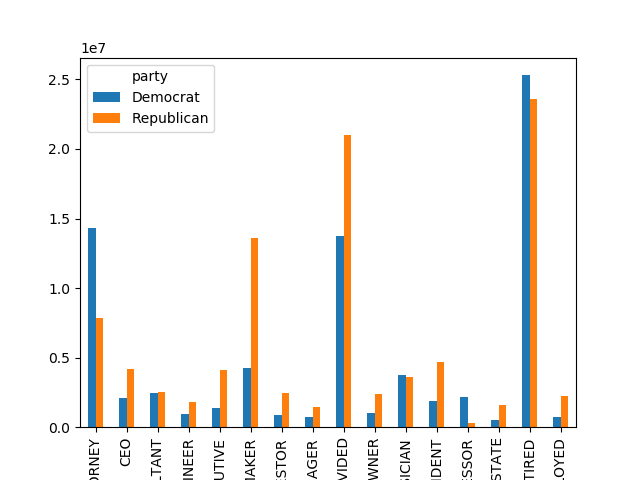
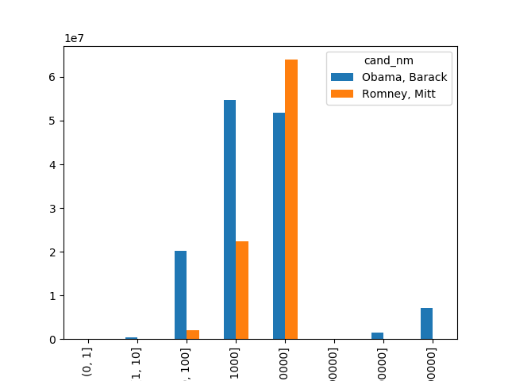
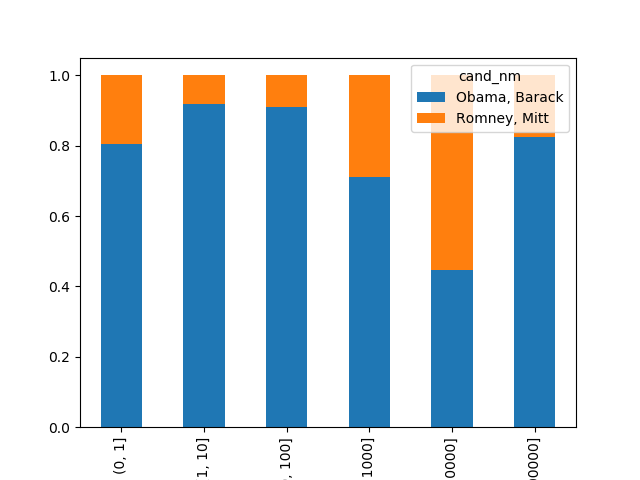
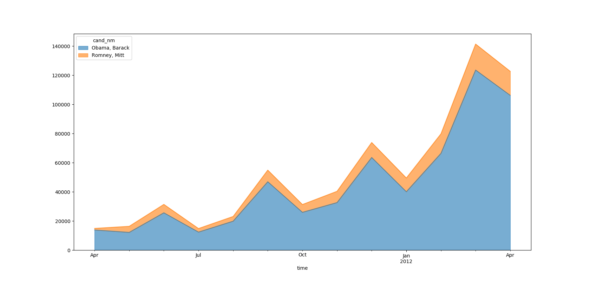

实践-2012年奥巴马总统连任选举¶
数据下载链接: 2012年奥巴马总统连任选举的数据 百度云盘用户名:416177937
参考 1
#import相关的库:
%matplotlib inline
import numpy as np
import pandas as pd
import matplotlib.pyplot as plt
数据载入和总览¶
pd.read_csv()函数用法:
pandas.read_csv(filepath, sep=', ' ,header='infer', names=None)
// filepath:文本文件路径
// sep:分隔符
// header:默认使用第一行作为列名，如果header=None则pandas为其分配默认的列名
// names:传入列表指定列名
#数据读入使用pd.read_csv():
data_01 = pd.read_csv('data_01.csv')
data_02 = pd.read_csv('data_02.csv')
data_03 = pd.read_csv('data_03.csv')
pandas.concat函数用法:
pd.concat(objs, axis=0, join='outer')
// 合并多个对象时需要放到一个列表中；
// axis=0默认按照0轴堆叠，axis=1指合并列；
// concat函数可按照其他轴的逻辑关系进行合并，默认join='outer'，还有一个可取的值是'inner'
数据合并:
data = pd.concat([data_01,data_02,data_03])
数据字段说明:
cand_nm – 接受捐赠的候选人姓名
contbr_nm – 捐赠人姓名
contbr_st – 捐赠人所在州
contbr_employer – 捐赠人所在公司
contbr_occupation – 捐赠人职业
contb_receipt_amt – 捐赠数额（美元）
contb_receipt_dt – 收到捐款的日期
#查看前5行数据:
In [140]: data.head()
Out[140]:
cand_nm contbr_nm contbr_st contbr_employer contbr_occupation contb_receipt_amt contb_receipt_dt
0 Bachmann, Michelle HARVEY, WILLIAM AL RETIRED RETIRED 250.0 20-JUN-11
1 Bachmann, Michelle HARVEY, WILLIAM AL RETIRED RETIRED 50.0 23-JUN-11
2 Bachmann, Michelle SMITH, LANIER AL INFORMATION REQUESTED INFORMATION REQUESTED 250.0 05-JUL-11
3 Bachmann, Michelle BLEVINS, DARONDA AR NONE RETIRED 250.0 01-AUG-11
4 Bachmann, Michelle WARDENBURG, HAROLD AR NONE RETIRED 300.0 20-JUN-11
#查看数据的信息，包括每个字段的名称、非空数量、字段的数据类型:
In [141]: data.info()
<class 'pandas.core.frame.DataFrame'>
Int64Index: 1001733 entries, 0 to 1730
Data columns (total 7 columns):
cand_nm 1001733 non-null object
contbr_nm 1001733 non-null object
contbr_st 1001729 non-null object
contbr_employer 988004 non-null object
contbr_occupation 993303 non-null object
contb_receipt_amt 1001733 non-null float64
contb_receipt_dt 1001733 non-null object
dtypes: float64(1), object(6)
memory usage: 61.1+ MB
#用统计学指标快速描述数据的概要:
In [142]: data.describe()
Out[142]:
contb_receipt_amt
count 1.001733e+06
mean 2.982358e+02
std 3.749663e+03
min -3.080000e+04
25% 3.500000e+01
50% 1.000000e+02
75% 2.500000e+02
max 2.014491e+06
数据清洗¶
缺失值处理¶
#从data.info()得知，contbr_employer、contbr_occupation均有少量缺失值,均填充为NOT PROVIDED:
data['contbr_employer'].fillna('NOT PROVIDED',inplace=True)
data['contbr_occupation'].fillna('NOT PROVIDED',inplace=True)
数据转换¶
利用字典映射进行转换:党派分析¶
#查看数据中总统候选人都有谁:
In [149]: print('共有{}位候选人，分别是'.format(len(data['cand_nm'].unique())))
...: data['cand_nm'].unique()
共有13位候选人，分别是
Out[149]:
array(['Bachmann, Michelle', 'Romney, Mitt', 'Obama, Barack',
"Roemer, Charles E. 'Buddy' III", 'Pawlenty, Timothy',
'Johnson, Gary Earl', 'Paul, Ron', 'Santorum, Rick',
'Cain, Herman', 'Gingrich, Newt', 'McCotter, Thaddeus G',
'Huntsman, Jon', 'Perry, Rick'], dtype=object)
#通过搜索引擎等途径，获取到每个总统候选人的所属党派，建立字典parties，候选人名字作为键，所属党派作为对应的值:
parties = {'Bachmann, Michelle': 'Republican',
'Cain, Herman': 'Republican',
'Gingrich, Newt': 'Republican',
'Huntsman, Jon': 'Republican',
'Johnson, Gary Earl': 'Republican',
'McCotter, Thaddeus G': 'Republican',
'Obama, Barack': 'Democrat',
'Paul, Ron': 'Republican',
'Pawlenty, Timothy': 'Republican',
'Perry, Rick': 'Republican',
"Roemer, Charles E. 'Buddy' III": 'Republican',
'Romney, Mitt': 'Republican',
'Santorum, Rick': 'Republican'}
增加一列party存储党派信息:
#通过map映射函数，增加一列party存储党派信息
data['party']=data['cand_nm'].map(parties)
#查看两个党派的情况
In [154]: data['party'].value_counts()
Out[154]:
Democrat 593747 // 民主党个数
Republican 407986 // 共和党个数
Name: party, dtype: int64
排序:按照职业汇总对赞助总金额进行排序¶
DataFrame.sort_values函数用法:
DataFrame.sort_values(by, ascending=True, inplace=False)
// by是根据哪一列进行排序，可以传入多列；
// ascending=True是升序排序，False为降序；
// inplace=Ture则是修改原dataframe，默认为False
排序：按照职业汇总对赞助总金额进行排序:
data.groupby('contbr_occupation')['contb_receipt_amt'].sum().sort_values(ascending=False)[:20]
利用函数进行数据转换:职业与雇主信息分析¶
#建立一个职业对应字典，把相同职业的不同表达映射为对应的职业，比如把C.E.O.映射为CEO:
occupation_map = {
'INFORMATION REQUESTED PER BEST EFFORTS':'NOT PROVIDED',
'INFORMATION REQUESTED':'NOT PROVIDED',
'SELF' : 'SELF-EMPLOYED',
'SELF EMPLOYED' : 'SELF-EMPLOYED',
'C.E.O.':'CEO',
'LAWYER':'ATTORNEY',
}
# 如果不在字典中,返回x
f = lambda x: occupation_map.get(x, x)
data.contbr_occupation = data.contbr_occupation.map(f)
# 对雇主信息进行类似转换:
emp_mapping = {
'INFORMATION REQUESTED PER BEST EFFORTS' : 'NOT PROVIDED',
'INFORMATION REQUESTED' : 'NOT PROVIDED',
'SELF' : 'SELF-EMPLOYED',
'SELF EMPLOYED' : 'SELF-EMPLOYED',
}
# If no mapping provided, return x
f = lambda x: emp_mapping.get(x, x)
data.contbr_employer = data.contbr_employer.map(f)
数据筛选¶
赞助金额筛选:
# 赞助包括退款（负的出资额），为了简化分析过程，我们限定数据集只有正出资额
data = data[data['contb_receipt_amt']>0]
候选人筛选（Obama、Romney）:
#查看各候选人获得的赞助总金额
In [168]: data.groupby('cand_nm')['contb_receipt_amt'].sum().sort_values(ascending=False)
Out[168]:
cand_nm
Obama, Barack 1.358776e+08
Romney, Mitt 8.833591e+07
Paul, Ron 2.100962e+07
Perry, Rick 2.030675e+07
Gingrich, Newt 1.283277e+07
Santorum, Rick 1.104316e+07
Cain, Herman 7.101082e+06
Pawlenty, Timothy 6.004819e+06
Huntsman, Jon 3.330373e+06
Bachmann, Michelle 2.711439e+06
Johnson, Gary Earl 5.669616e+05
Roemer, Charles E. 'Buddy' III 3.730099e+05
McCotter, Thaddeus G 3.903000e+04
Name: contb_receipt_amt, dtype: float64
#选取候选人为Obama、Romney的子集数据
data_vs = data[data['cand_nm'].isin(['Obama, Barack','Romney, Mitt'])].copy()
面元化数据¶
利用cut函数根据出资额大小将数据离散化到多个面元中:
In [199]: bins = np.array([0,1,10,100,1000,10000,100000,1000000,10000000])
...: labels = pd.cut(data_vs['contb_receipt_amt'],bins)
...: labels
Out[179]:
411 (10, 100]
412 (100, 1000]
413 (100, 1000]
414 (10, 100]
415 (10, 100]
...
201380 (1000, 10000]
201381 (10, 100]
201382 (100, 1000]
201383 (1, 10]
201384 (10, 100]
201385 (100, 1000]
Name: contb_receipt_amt, Length: 694283, dtype: category
Categories (8, interval[int64]): [(0, 1] < (1, 10] < (10, 100] < (100, 1000] < (1000, 10000] <
(10000, 100000] < (100000, 1000000] < (1000000, 10000000]]
查看出资额原数据:
In [180]: data_vs['contb_receipt_amt']
Out[180]:
411 25.0
412 110.0
413 250.0
414 30.0
415 100.0
...
201380 2500.0
201381 25.0
201382 250.0
201383 3.0
201384 25.0
201385 135.0
数据聚合与分组运算¶
分组计算Grouping，分组运算是一个“split-apply-combine”的过程:
拆分，pandas对象中的数据会根据你所提供的一个或多个键被拆分为多组
应用，将一个函数应用到各个分组并产生一个新值
合并，所有这些函数的执行结果会合并到最终的结果对象中

透视表(pivot_table)分析党派和职业¶
通过pivot_table根据党派和职业对数据进行聚合，然后过滤掉总出资不足200万美元的数据:
#按照党派、职业对赞助金额进行汇总，类似excel中的透视表操作，聚合函数为sum
by_occupation = data.pivot_table('contb_receipt_amt',index='contbr_occupation',columns='party',aggfunc='sum')
#过滤掉赞助金额小于200W的数据
over_2mm = by_occupation[by_occupation.sum(1)>2000000]
查看:
In [190]: over_2mm
Out[190]:
party Democrat Republican
contbr_occupation
ATTORNEY 14302461.84 7.868419e+06
CEO 2074974.79 4.211041e+06
CONSULTANT 2459912.71 2.544725e+06
ENGINEER 951525.55 1.818374e+06
EXECUTIVE 1355161.05 4.138850e+06
HOMEMAKER 4248875.80 1.363428e+07
INVESTOR 884133.00 2.431769e+06
MANAGER 762883.22 1.444532e+06
NOT PROVIDED 13725187.32 2.097161e+07
OWNER 1001567.36 2.408287e+06
PHYSICIAN 3735124.94 3.594320e+06
PRESIDENT 1878509.95 4.720924e+06
PROFESSOR 2165071.08 2.967027e+05
REAL ESTATE 528902.09 1.625902e+06
RETIRED 25305316.38 2.356124e+07
SELF-EMPLOYED 741746.40 2.245273e+06
图表展示:
over_2mm.plot(kind='bar')

分组级运算和转换¶
根据职业与雇主信息分组运算¶
由于职业和雇主的处理非常相似，我们定义函数get_top_amounts()对两个字段进行分析处理:
In [191]: def get_top_amounts(group,key,n=5): #传入groupby分组后的对象，返回按照key字段汇总的排序前n的数据
...: totals = group.groupby(key)['contb_receipt_amt'].sum()
...: return totals.sort_values(ascending=False)[:n]
...: grouped = data_vs.groupby('cand_nm')
根据职业信息分组运算:
In [192]: grouped.apply(get_top_amounts,'contbr_occupation',n=7)
Out[192]:
cand_nm contbr_occupation
Obama, Barack RETIRED 25305316.38
ATTORNEY 14302461.84
NOT PROVIDED 13725187.32
HOMEMAKER 4248875.80
PHYSICIAN 3735124.94
CONSULTANT 2459912.71
PROFESSOR 2165071.08
Romney, Mitt NOT PROVIDED 11638509.84
RETIRED 11508473.59
HOMEMAKER 8147446.22
ATTORNEY 5372424.02
PRESIDENT 2491244.89
CEO 2324297.03
EXECUTIVE 2300947.03
Name: contb_receipt_amt, dtype: float64
结论:
Obama更受精英群体（律师、医生、咨询顾问）的欢迎，Romney则得到更多企业家或企业高管的支持
根据雇主信息分组运算:
In [192]: grouped.apply(get_top_amounts,'contbr_employer',n=10)
Out[192]:
cand_nm contbr_employer
Obama, Barack RETIRED 22694558.85
SELF-EMPLOYED 18626807.16
NOT PROVIDED 13883494.03
NOT EMPLOYED 8586308.70
HOMEMAKER 2605408.54
STUDENT 318831.45
VOLUNTEER 257104.00
MICROSOFT 215585.36
SIDLEY AUSTIN LLP 168254.00
REFUSED 149516.07
Romney, Mitt NOT PROVIDED 12321731.24
RETIRED 11506225.71
HOMEMAKER 8147196.22
SELF-EMPLOYED 7414115.22
STUDENT 496490.94
CREDIT SUISSE 281150.00
MORGAN STANLEY 267266.00
GOLDMAN SACH & CO. 238250.00
BARCLAYS CAPITAL 162750.00
H.I.G. CAPITAL 139500.00
Name: contb_receipt_amt, dtype: float64
结论:
Obama：微软、盛德国际律师事务所； Romney：瑞士瑞信银行、摩根斯坦利、高盛公司、巴克莱资本、H.I.G.资本
对赞助金额进行分组分析(matplotlib画图)¶
首先统计各出资区间的赞助笔数:
# 这里用到unstack()，stack()函数是堆叠，unstack()函数就是不要堆叠，即把多层索引变为表格数据
In [202]: grouped_bins = data_vs.groupby(['cand_nm',labels])
...: grouped_bins.size().unstack(0)
Out[202]:
cand_nm Obama, Barack Romney, Mitt
contb_receipt_amt
(0, 1] 493.0 77.0
(1, 10] 40070.0 3681.0
(10, 100] 372280.0 31853.0
(100, 1000] 153992.0 43357.0
(1000, 10000] 22284.0 26186.0
(10000, 100000] 2.0 1.0
(100000, 1000000] 3.0 NaN
(1000000, 10000000] 4.0 NaN
再统计各区间的赞助金额:
In [205]: bucket_sums=grouped_bins['contb_receipt_amt'].sum().unstack(0)
...: bucket_sums
Out[205]:
cand_nm Obama, Barack Romney, Mitt
contb_receipt_amt
(0, 1] 318.24 77.00
(1, 10] 337267.62 29819.66
(10, 100] 20288981.41 1987783.76
(100, 1000] 54798731.46 22363381.69
(1000, 10000] 51753705.67 63942145.42
(10000, 100000] 59100.00 12700.00
(100000, 1000000] 1490683.08 NaN
(1000000, 10000000] 7148839.76 NaN
图表展示Obama、Romney各区间赞助总金额:
bucket_sums.plot(kind='bar')

Note
百分比堆积图效果会更好
#算出每个区间两位候选人收到赞助总金额的占比:
In [207]: normed_sums = bucket_sums.div(bucket_sums.sum(axis=1),axis=0)
...: normed_sums
Out[207]:
cand_nm Obama, Barack Romney, Mitt
contb_receipt_amt
(0, 1] 0.805182 0.194818
(1, 10] 0.918767 0.081233
(10, 100] 0.910769 0.089231
(100, 1000] 0.710177 0.289823
(1000, 10000] 0.447326 0.552674
(10000, 100000] 0.823120 0.176880
(100000, 1000000] 1.000000 NaN
(1000000, 10000000] 1.000000 NaN
#使用柱状图，指定stacked=True进行堆叠，即可完成百分比堆积图:
normed_sums[:-2].plot(kind='bar',stacked=True)

结论:
小额赞助方面，Obama获得的数量和金额比Romney多得多
按照赞助人姓名分组计数¶
计算重复赞助次数最多的前20人:
In [209]: data.groupby('contbr_nm')['contbr_nm'].count().sort_values(ascending=False)[:20]
Out[209]:
contbr_nm
WILLIAMS, DEBBY 205
BERKE, DAVID MICHAEL 171
SEBAG, DAVID 161
SMITH, ERIK 145
FALLSGRAFF, TOBY 138
SKINNER, DONNA 136
CASPERSON, CAROLINA 132
HARRIS, CLAUDIA W. 132
ROSBERG, MARILYN 115
POTTS, LILLIE 114
DUDLEY, DEBBIE 111
HAUGHEY, NOEL ANTHONY 107
DFHDFH, DFHDFH 96
SHERWIN, GLEN R. 94
MITCHELL, CAITLIN 90
SMITH, CHARLES 88
KARIMIAN, AFSANEH 87
NURU, ISAAC 87
MASTERS, MARGERY 85
BIRMINGHAM, TOM 85
Name: contbr_nm, dtype: int64
时间处理¶
str转datetime¶
指定特定的日期解析格式，如:
pd.to_datetime(series,format='%Y%m%d')
增加一列time存储datetime类型的时间数据:
data_vs['time'] = pd.to_datetime(data_vs['contb_receipt_dt'])
以时间作为索引¶
增加time索引:
In [222]: data_vs.set_index('time',inplace=True)
...: data_vs.head()
Out[222]:
cand_nm contbr_nm contbr_st ... contb_receipt_amt contb_receipt_dt party
time ...
2012-02-01 Romney, Mitt ELDERBAUM, WILLIAM AA ... 25.0 01-FEB-12 Republican
2012-02-01 Romney, Mitt ELDERBAUM, WILLIAM AA ... 110.0 01-FEB-12 Republican
2012-04-13 Romney, Mitt CARLSEN, RICHARD AE ... 250.0 13-APR-12 Republican
2011-08-21 Romney, Mitt DELUCA, PIERRE AE ... 30.0 21-AUG-11 Republican
2012-03-07 Romney, Mitt SARGENT, MICHAEL AE ... 100.0 07-MAR-12 Republican
[5 rows x 8 columns]
重采样和频度转换¶
定义:
重采样（Resampling）指的是把时间序列的频度变为另一个频度的过程。
把高频度的数据变为低频度叫做降采样（downsampling），resample会对数据进行分组，然后再调用聚合函数。
这里我们把频率从每日转换为每月，属于高频转低频的降采样:
In [223]: vs_time = data_vs.groupby('cand_nm').resample('M')['cand_nm'].count()
...: vs_time.unstack(0)
Out[223]:
cand_nm Obama, Barack Romney, Mitt
time
2011-04-30 13830 1096
2011-05-31 12182 4163
2011-06-30 25626 5757
2011-07-31 12372 2454
2011-08-31 19860 3226
2011-09-30 46927 7968
2011-10-31 25941 5349
2011-11-30 32629 7737
2011-12-31 63562 10289
2012-01-31 40055 9431
2012-02-29 66416 13396
2012-03-31 123564 17807
2012-04-30 106164 16482
用面积图把11年4月-12年4月两位总统候选人接受的赞助笔数做个对比:
fig1, ax1=plt.subplots(figsize=(32,8))
vs_time.unstack(0).plot(kind='area',ax=ax1,alpha=0.6)
plt.show()

结论:
越临近竞选，大家赞助的热情越高涨，奥巴马在各个时段都占据绝对的优势